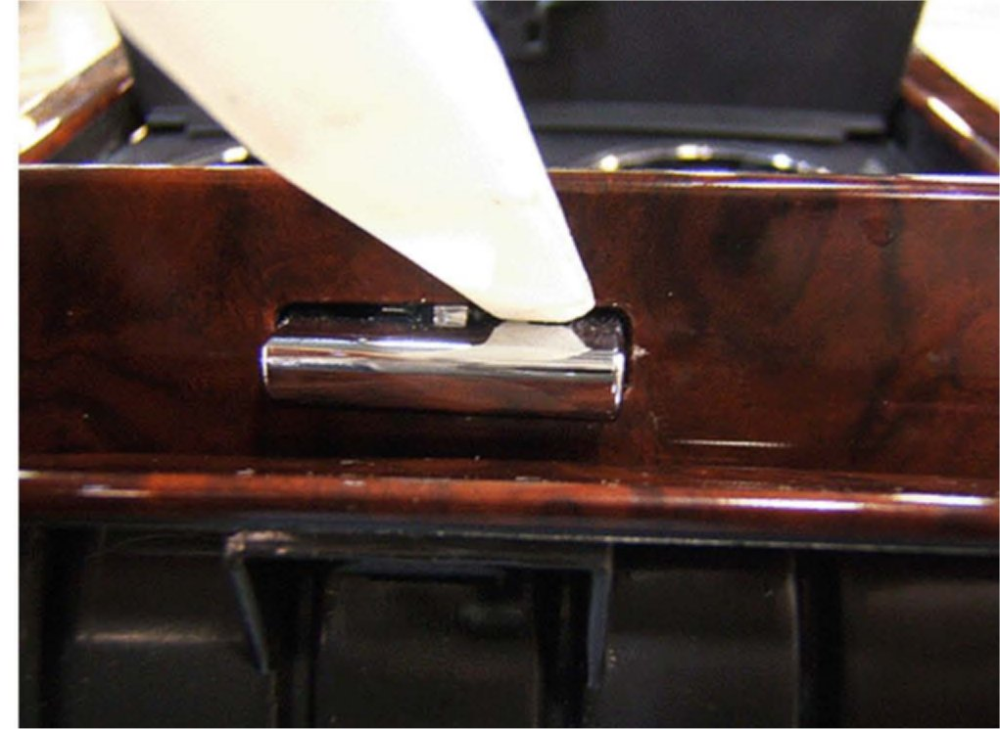
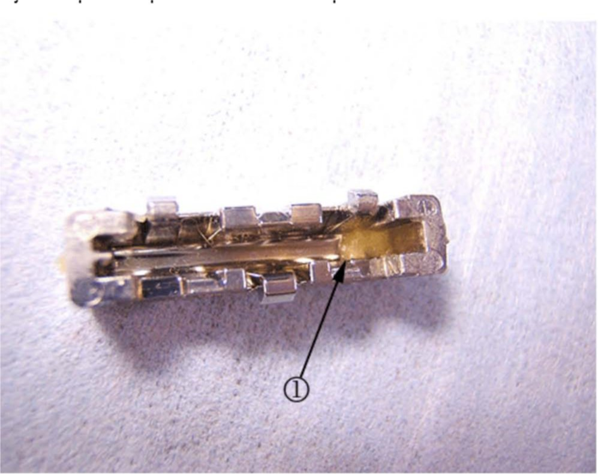
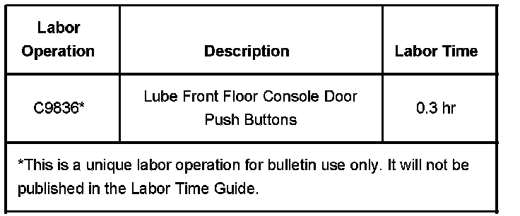

Interior - Cup Holder/Ash Tray Door Not Operational
Bulletin No.: 08-08-49-003Date: February 21, 2008
TECHNICAL
Subject:
Center Console Cup Holder Door and/or Ashtray Door May Not Open when Center of Push Button is Depressed (Lube Buttons)
Models:
2007-2008 Cadillac Escalade, Escalade ESV, Escalade EXT
Condition
Some customers may comment that the center console cup holder door and/or ashtray door may not open when the center of the push button is depressed. If the side or corner of the push button is depressed the door will usually open.
Cause
This condition may be due to the lack of beeswax inside the push button or the wax may not be properly distributed.
Correction
DO NOT use a screwdriver to pry the push button out or you may damage the door. Use a plastic trim stick when removing the push button.
Remove the push buttons and lube the inside of the buttons using the steps below.
The center console door should be in the closed position. Using a plastic trim stick pry on one corner of the push button until the button end releases from the door.

Pry the top of the push button with the plastic trim stick until the button pops out as shown above.

Inspect the inside of the button for beeswax (1) at the corner.
If the wax is present use a toothpick like tool and spread the wax evenly inside the button from end to end.
Apply a very small amount of lube. Too much lube may cause the button to stick or the lube to seep out.
If there is no wax inside the button to spread you may apply a very small amount of GM Super Lube(R) with PTFE P/N 12371287 (in Canada P/N 10953437) to the inside of the push button.
Tip
The single tab on the push button faces the front edge of the door.
Install the push button back into the door assembly.
Depress the center of the push button and verify proper operation of the door for six complete cycles.
Clean off any excessive grease or wax from the button or door.
Repeat this entire procedure for the other push button.
Warranty Information

For vehicles repaired under warranty use, the table.

Disclaimer